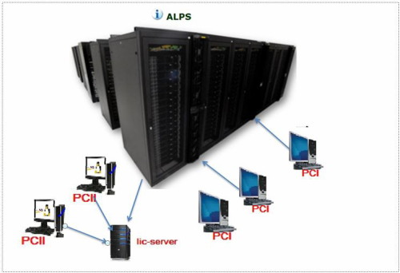
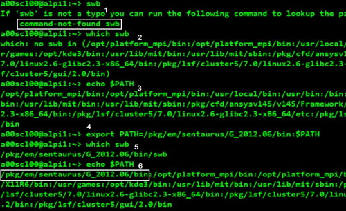
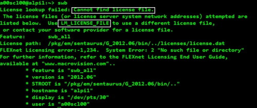
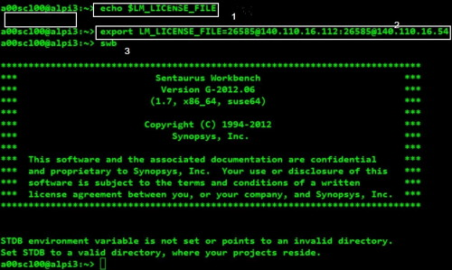
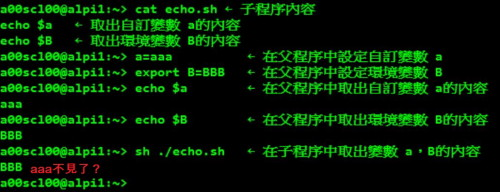
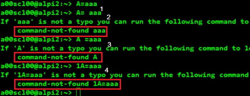
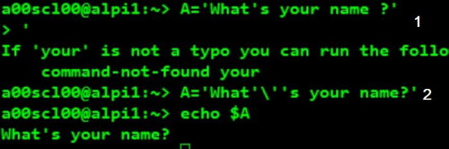
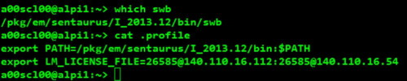
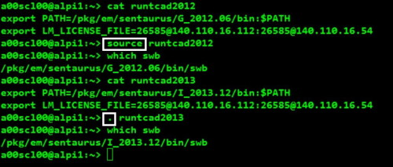

也紀念我們永遠的朋友 李士傑先生（Shih-Chieh Ilya Li）。
輕鬆啟動 linux 版本計算應用軟體
作者簡介：陸聲忠，國立成功大學土木工程研究所，現任職於國家高速網路與計算中心。
前言
以往Linux帶給人的印象，就是那要記一大堆指令還要一字一字敲打鍵盤才能工作的東東，相當的不友善。讓人覺得在上面工作，似乎不是件簡單的事。現今多數人一開始接觸電腦時所使用的作業系統都是微軟的產品，一旦面對Linux的文字命令列模式，馬上就退縮了，更別說還要學它，雖然目前大多數的Linux發行版本都以親和力高、容易上手的圖形使用者介面 (GUI) 做為主要操作方式，使得進入Linux的門檻也降低不少。由於linux具有較好的系統穩定性、較佳的惡意軟體防護及很低的價格或免費等特性。使得很多科學模擬計算應用軟體及科研人員都選其做為開發平台，這點從世界排名前五百大的超級電腦排行榜看來，就不難了解箇中原因了。而偏偏這類軟體的啟動方式又不像微軟版軟體，只要用滑鼠點兩下就可以了，不但必須在文字命令列模式下操作，啟動前還要做一些設定，本文將以「國網中心」電腦模擬計算環境為例，藉由操作過程中所碰到的問題來說明啟動軟體前要做什麼設定，進而探討這些設定的意義，使得各位不再對linux感到畏懼，進而感覺到它的便利性。
誰需要閱讀這篇文章
筆者將本文之讀者分為以下三類：
- 無任何使用linux版本計算應用軟體需求者，看到這裡就可以移動滑鼠關閉網頁了。
- 具有豐富的linux版本計算應用軟體之使用經驗、且熟悉相關設定者，同樣地也沒必要再繼續看下去，免得浪費您寶貴的時間。
- 因工作需求而不得不使用linux版計算應用軟體，卻從來没有相關經驗者或操作過程中遭遇到一些問題的人，相信這篇文章應該可以解除您心中所有的疑感，讓您輕鬆啟動
linux版本計算應用軟體。
國網中心電腦模擬計算環境現況
國網中心建置了豐富多樣的電腦模擬計算環境。在此計算環境中包含了各領域著名的專業應用軟體，其中有工程與科學相關之應用軟體、數學工具軟體與數值程式庫等，提供相關領域客戶執行各類問題及學術研究上之設計與分析模擬。

▲圖1 國網中心電腦模擬計算環境現況
圖1為國網中心電腦模擬計算環境現況，整個計算環境由以下幾個部份所組成：
- 計算應用軟體：本文是以Sentaurus TCAD 半導體元件與製程模擬軟體為例，
- 遠端連線伺服器：為國網中心Acer AR585 F1 Cluster（以ALPS 表示）， 須提供
sshd連線服務並有安裝TCAD 軟體。 - 客戶的桌機I：作業系統可為windows 或linux 或 Mac OS，須具備 ssh
連線工具及 X server 軟體，以PCI表示。 - 客戶的桌機Ⅱ：作業系統為linux並有安裝TCAD 軟體，以PCⅡ表示。
- 軟體授權伺服器管理系統主機：用來安裝軟體授權伺服器管理系統 (software
license server manager)，以確保這些軟體使用的合法性，避免被盜用及濫用，以lic-server 表示。
國網中心電腦模擬計算環境運作流程
圖1亦可用來說明計算環境下啟動應用軟體的運作流程，PCI類客戶即使在家中或其工作場所，只要透過遠端連線軟體（例如：ssh）並啟動X server軟體，以筆者為例，使用的是putty，及Xming（詳細說明請參閱「自由軟體鑄造場電子報」第 245 期 「Xserver的介紹與應用」），連上ALPS的登入節點 (head node) 後，完成相關設定後只要執行swb就可啟動該軟體，軟體啟動前授權伺服器 (license server) 會檢查軟體授權數量是否足夠，如果夠才會正常啟動軟體。由於PCⅡ類之客戶軟體是安裝在本機端上，因此在自己的電腦上使用即可。不過軟體啟動前授權伺服器會先檢查此IP是否有使用權限。接著再檢查軟體授權數量是否足夠，二者只要有一項不符合規定，軟體就無法啟動。

▲圖2 可執行檔路徑設定錯誤所產生的訊息
圖2則為PCI類客戶在ALPS上因軟體可執行檔路徑 (PATH) 設定錯誤所產生的訊息，詳細說明如下：
- 登入系統後，啥事也沒做直接輸入swb 指令，立即出現找不到 swb指令訊息。
- 輸入 which swb 指令，查看swb 到底躲在那裡，結果還是找不到。
- 使用
echo \$PATH，列出所有可執行檔的尋找範圍，果不其然，和步驟2的結果差不多 ，表示swb跟本就不在\$PATH裡面。 - 使用
export PATH=/pkg/em/sentaurus/G\_2012.06/bin:\$PATH，將
/pkg/em/sentaurus/G_2012.06/bin目錄加到可執行檔尋找範圍中。 - 再執行一次which swb 就看到它躲在/pkg/em/sentaurus/G_2012.06/bin
下了。 - 再輸入
echo\$PATH指令，就看到/pkg/em/sentaurus/G_2012.06/bin名列其中，而且還排在最前面。
原本以為一切就緒，應該不會再有問題了，沒想到再度輸入swb指令，卻出現找不到license file訊息，圖3為 license path設定錯誤時出現之訊息。

▲圖3 軟體license path設定錯誤啟動時出現之訊息

▲圖4 license path 設定及軟體啟動畫面
圖4為license path設定及軟體啟動畫面，相關說明如下：
- 使用
echo \$LM\_LICENSE\_FILE，查看其內容，結果為空白，以致軟體無法啟動。 - 使用
export LM\_LICENSE\_FILE= This e-mail address is being protected from spambots. You need JavaScript enabled to view it : This e-mail address is being protected from spambots. You need JavaScript enabled to view it
設定LM_LICENSE_FILE環境變數，其中26586為該軟體授權服務之埠號，而這兩組IP則分屬兩台軟體授權伺服器管理系統主機，會視客戶在啟動軟體時所碰到情況，而自動切換。 - 輸入swb，就可正常啟動軟體。
shell的變數功能
看到前面的那些設定，沒耐性的人可能早就嚇跑了，「ㄟˊ」先別急著跑，繼續看下去，待會兒您就知道，原來啟動linux版本應用軟體竟是這麼簡單。
-
shell：shell是linux作業系統上的一個操作介面，主要是做為使用者與核心 (kernel) 間溝通的一個橋樑。它接收使用者輸入的命令然後把它送給核心去執行使其可以控制硬體來工作。主要版本有的Bourne Shell、BASH (Bourne Again Shell)、 Korn Shell、C Shell、Z Shell，本文所使用的就是BASH。
-
變數：簡單的說，就是以一個特定字串來代表不固定的內容而這特定字串就是變數了，例如以上所提到的LM_LICENSE_FILE、PATH，而使用變數最大的好處就是方便。
-
變數的種類：變數根據其有效範圍又分為環境變數與自訂變數，環境變數是可以在子程序中繼續被引用的；而自訂變數只可以在父程序中被引用。說的很清楚但是聽的很模糊，就用以下例子來進行說明，為避免混淆，建議以小寫來表示自訂變數，而環境變數則以大寫來表示。
圖5則是用來說明環境變數與自訂變數的有效範圍，由圖5中可以看出在bash（父程序）下設定的環境變數在echo.sh（子程序）下仍可被引用，這也是為何大部份卻本程式 (shell script) 都使用環境變數。

▲圖5環境變數與自訂變數的有效範圍
變數的設定與取用
變數的設定使用的是「=」符號，例如：
export PATH=/pkg/em/sentaurus/G\_2012.06/bin:\$PATH
前面加上export，表示其為環境變數。否則為自訂變數。變數在取用時，前面必須要加上錢字號「$」，要知道PATH變數 的內容則可以利用echo這個指令來查看。
變數命名規則

▲圖6 變數命名規則 varrule.JPG
圖6說明如下：
1. 變數內容以「=」等號來設定。
2. 等號兩邊不能出現空白字元，如「=」右邊為空白則bash會將aaa視為指令。而出現找不到aaa指令的訊息；如「=」左邊為空白則bash會將A視為指令。而出現找不到A指令的訊息。
3. 變數名稱只能是英文字母與數字，但是開頭字元不能是數字否則bash會將1A=aaa視為指令。而出現找不到1A=aaa指令訊息。
保留變數原來內容的方法
若變數內容中包含有空白字元「」、單引號「’」、雙引號「”」、跳脫符號「\」、管線「|」、資料流輸出導向「>」、資料流輸出導向「\<」、連續指令下達分隔符號「;」、取用變數內容前置字元「$」、工作控制字元「&」、小括弧號「()」等，則在設定變數時將會出現不同的狀況，圖7則為變數內容包含殊殊字元時發生的情況及保留其原有內容之方法。
- 在bash 下，「”」和「’」 如做為quote字元，必須成對出現，否則bash會給一個「 >」來提示輸入(prompt input) ，當輸入「’」則完成配對，不過卻出現’your command-not-found 訊息。
- 「 ‘」若如做為字面上的字元，則必須在前面加「\」 將其跳脫，而且這個字元不可在 「 ‘」裡面，必須先離開「 ‘」e，再進入。
看了以上說明，可以了解變數內容包含特殊字元是是蠻難處理的，除非有需要千萬不要這樣做。

▲圖7變數內容包含殊殊字元的設定方法
login與non-login shell
在介紹bash的設定檔前，我們先來了解什麼是login shell 和 non-login shell。所謂login shell：取得bash時需要完整的登入流程的，就稱為 login shell。
舉例來說，你要由tty1 \~ tty6登入，需要輸入使用者的帳號與密碼，此時取得的 bash 就稱為『 login shell』；non-login shell：取得bash介面的方法不需要重複登入的舉動，舉例來說，你以X window登入Linux後，再以X的圖形化介面啟動終端機，此時那個終端介面並沒有需要再次的輸入帳號與密碼，那個bash的環境就稱為non-login shell了。你在原本的bash環境下再次下達bash指令，同樣的也沒有輸入帳號密碼， 那第二個bash（子程序）也是non-login shell 。
bash 的環境設定檔
在啟動應用軟體前，必須完成相關設定，才能正常啟用軟體，但為何我們什麼都沒做，一進入bash就取得一堆有用的指令可使用？
這是因為系統有一些環境設定檔案的存在，讓bash在啟動時直接讀取這些設定檔，以規劃好bash的操作環境。而這些設定檔又可以分為全體系統的設定檔以及使用者個人偏好設定檔。
使用者個人偏好設定檔
bash在讀完了整體環境設定檔/etc/profile並藉此呼叫其他設定檔後，接下來則是會讀取使用者的個人設定檔。 在login shell的bash環境中，所讀取的個人偏好設定檔其實主要有四個，依序分別是：
\~/.bash_profile → \~/.bash_login → \~/.profile → \~/.bashrc
其實bash的login shell設定只會讀取上面三個檔案的其中一個，而讀取順序則為由左向右的順序。也就是說，如果 \~/.bash_profile存在，那麼其他兩個檔案不論有無存在，都不會被讀取。如果\~/.bash_profile不存在才會去讀取\~/.bash_login，而前兩者都不存在才會讀取\~/.profile 的意思。
會有這麼多的檔案，其實是因應其他shell轉換過來的使用者的習慣而已。簡單一句話，只要有 \~/.profile 就可以了，接下再讀 \~/.bashrc( non-login shell才會讀取)。根據這個原理，只要將上述有關啟動軟體所須之變數設定寫入\~/.profile中，當您在登入系統時將會自動讀取這些設定，此時只要輸入swb即可啟用應用軟體，圖8為\~/.profile內容及登入後查看swb畫面。

▲圖8 \~/.profile 內容及登入畫面
上述方式看似簡單便利，不過卻存在著一些問題，如果將不同版本的設定都寫在\~/.profile中，則不管設定了幾個版本，最後只能使用一個版本，此時可將這些設定寫成一個檔案，再利用「source」或「.」讀入環境設定檔，如圖9。如果將不同應用軟體的環境設定都寫在\~/.profile，也可能因為不同軟體使用的變數名稱（例如license
path）相同，而導致軟體無法開啟，要避免這種情況發生，最好的方法就是將每個軟體的設定各寫成一個檔案，執行前再利用「source」「.」讀入環境設定檔。

▲圖9手動讀入環境設定檔
結論
- 使用linux版本計算應用軟體不僅要在文字命令列模式下操作，啟動前還要做一些設定，透過變數的設定，將可簡化這些工作。
- 將相關設定寫在 \~/.profile（on-login shell才會讀取）或\~/.bashrc（non-login
shell才會讀取）中，使用者在登入系統時便會自動讀取這些設定，然後時只要輸入
啟動指令即可啟用應用軟體。 - 如果想同時使用不同版本的應用軟體則不可將所有設定都寫在\~/.profile中，否則不管設定了幾個版本，最後只能使用一個版本，此時可將不同版本之設定寫成一個檔案，再利用「source」或「.」讀入環境設定檔，如果將不同版本的設定都寫在\~/.profile，中不管設定了幾個版本，最後只能使用一個版本，此時可將這些設定寫成一個個案，再利用「source」「.」讀入環境設定檔。
- 如果將不同應用軟體的環境設定都寫在\~/.profile，有時可能因為軟體使用的變數名稱（例如license path）相同，而導致軟體無法開啟，最好的方法就是將這些設定寫成一個檔案，執行前再利用「source」「.」讀入環境設定檔。
- 變數內容儘量不要包含特殊字元，若有必要可用單引號「’」、雙引號「”」、跳脫符號
「\\」來處理。
Special


Address：No.128, Sec.2, Academia Rd., Institute of Information Science, Academia Sinica, Nangang District, Taipei City 11529, Taiwan (R.O.C).
Privacy Policy. Terms-of-use